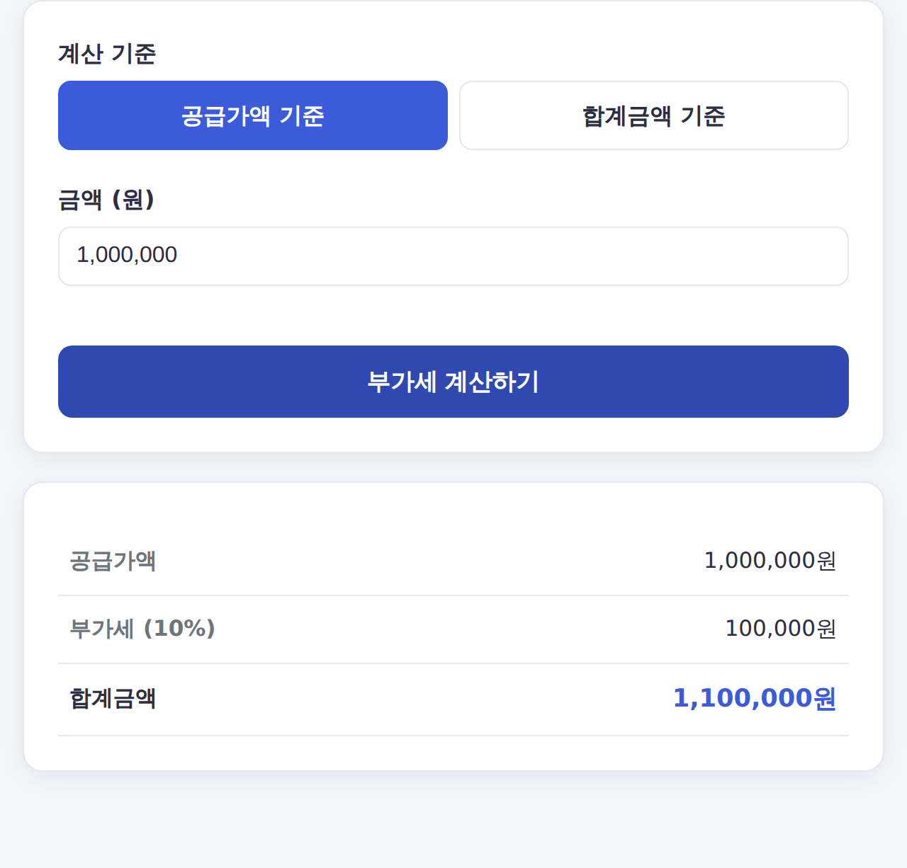

부가세 계산기 사용법 — 부가가치세 10% 쉽게 계산하는 법
세금계산서를 발행하거나 견적서를 작성할 때 꼭 따져야 하는 부가가치세(VAT) 10%. 공급가액 기준인지, 부가세가 포함된 금액인지에 따라 계산이 달라집니다. 헷갈리지 않게 정리해 드립니다.
⏱️ 금액만 넣으면 끝! 부가세 계산기에서 공급가액·합계금액 기준 모두 자동 계산됩니다.

부가세 계산의 두 가지 기준
1) 공급가액 기준 (부가세 별도)
- 부가세 = 공급가액 × 10%
- 합계금액 = 공급가액 × 1.1
- 예: 공급가액 100만원 → 부가세 10만원, 합계 110만원
2) 합계금액 기준 (부가세 포함)
- 공급가액 = 합계금액 ÷ 1.1
- 부가세 = 합계금액 − 공급가액
- 예: 합계 110만원 → 공급가액 100만원, 부가세 10만원
자주 쓰는 금액 빠른 표 (공급가액 기준)
| 공급가액 | 부가세 | 합계금액 |
|---|---|---|
| 100,000원 | 10,000원 | 110,000원 |
| 500,000원 | 50,000원 | 550,000원 |
| 1,000,000원 | 100,000원 | 1,100,000원 |
| 3,000,000원 | 300,000원 | 3,300,000원 |
자주 묻는 질문
Q. 간이과세자도 부가세가 10%인가요?
일반과세자의 부가가치세율은 10%입니다. 간이과세자는 업종별 부가가치율이 적용되어 실제 납부세액 계산 방식이 다릅니다.